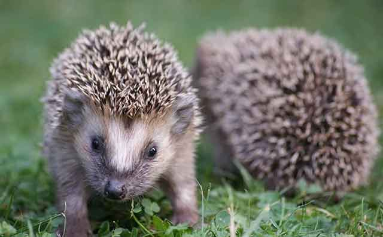
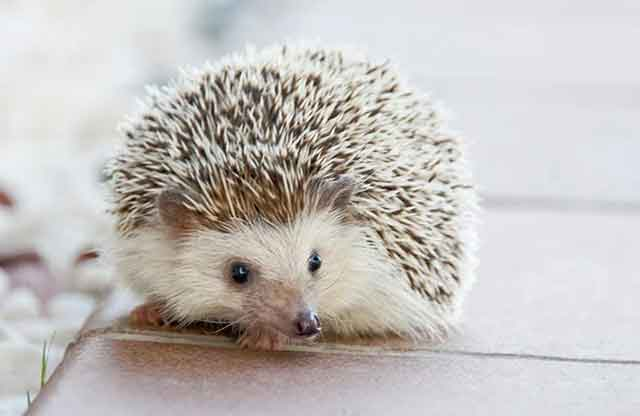
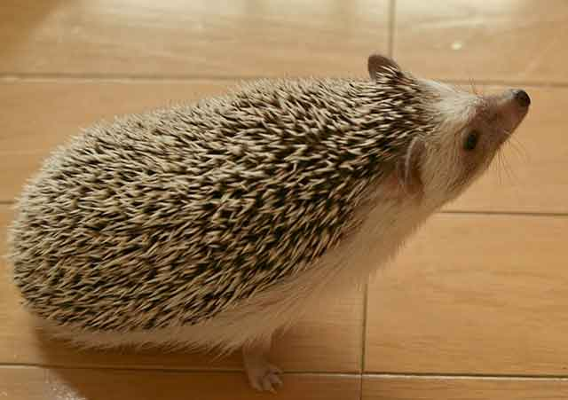
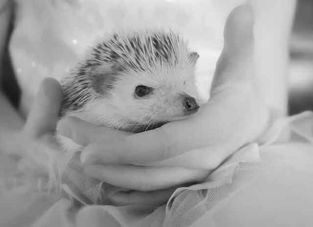
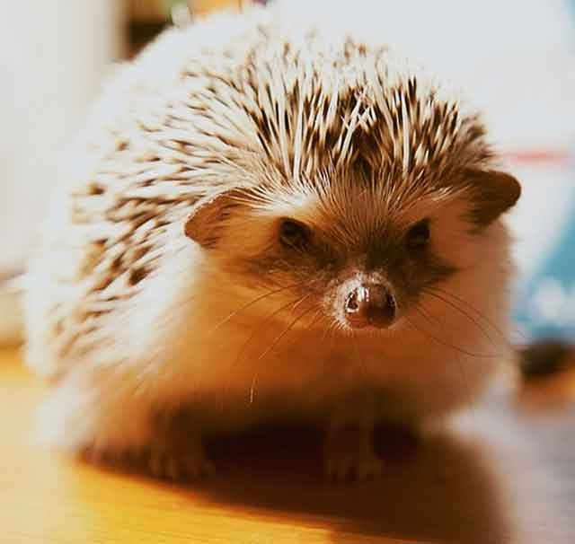

고슴도치 핸들링 방법!
등 위로 빼곡하게 올라온 고슴도치 바늘! 어떻게 만질까 생각하지만, 고슴도치를 키우는 집사님들을 보면의외로 잘 만지는 모습을 볼 수 있죠? 고슴도치를 만질 수 있는 방법! 이것을 '핸들링'이라고 한다는데요. 이 핸들링을 잘해야 고슴도치와 사이좋게 지내고 조심히 다룰 수 있게 됩니다. 올바른 핸들링 방법! 하나씩 알아보겠습니다!
'핸들링 시작 전, 준비'
고슴도치는 냄새에 무척 예민하다고알려져 있는데요. 사람을 기억할 때에도 냄새로 알아본다고 합니다. 만약 손에 로션이나 향수를 발라 향이 있는 상태로 고슴도치를 만지게 된다면 주인을 못 알아볼수 있는데요. 그래서 고슴도치를 만지기 전에는 손을 깨끗하게 씻은 후 만지는 게 좋습니다.
'핸들링 시작, 천천히 다가가기'
처음부터 가시를 바로 잡을순 없겠죠? 천천히 다가갈 수 있게 손끝을 고슴도치 코끝에 가져다 둡니다. 갑작스럽게 코에 대는것 보다는 천천히 손의 움직임을 고슴도치가 이해 할수 있도록 다가갑니다. 손을 코끝을 향하게 하고 고슴도치가 다가올수 있도록 기다리는 것도 방법입니다!
손 냄새를 맡은 고슴도치는 여러 가지 행동을 보인다고 하는데요. 핥을 수도 있고, 깨물 수도 있습니다. 그리고 핥은 후 입가에 흰 거품을 내고 등가시에 묻힐 수도 있습니다. 이 행동은 '안팅'이라는 고슴도치만의 냄새 기억법이랍니다.
'경계를 풀면, 손으로 천천히 만져주기'
냄새를 기억한 고슴도치가 조심히 다가와 행동을 보인다면, 손가락 끝을 고슴고치 턱밑에 대어서 천천히 만져봅니다. 이때 주의하실 점은 급하게 움직이면 고슴도치가 놀라 밤송이가 될 수 있으니, 조심스럽게 놀라지 않도록 해야 합니다.
손 위에 올라타기까지 꽤 시간이 걸릴지라도 천천히 놀라지 않게 만지는 것이 중요합니다. 그리고 손 냄새를 잘 기억할 수 있도록 자주 냄새를 맡게 해줘야겠죠?
'냄새가 익숙해졌다면, 핸들링은 완성!"
냄새가 익숙해졌다면 고슴도치와 친해지는 건 시간문제입니다. 주인을 알아본 고슴도치는 가시를 세우지 않고 편한 상태로 주인의 손 위에서 움직일 테니까요. 단, 친해졌다 느껴도 고슴도치를 깜짝 놀라게 하는 행동은 안됩니다! 다시 밤톨이로 변신할 수 있습니다.
'주의해야 할 점은?"
핸들링을 시작할 때 고슴도치의 가시를 무서워 해서는 안됩니다. 주인이 겁을 먹으면, 고슴도치나 사람 모두 놀랄만한 상황이 발생할 수 있어요. 또, 핸들링은 자주 해주는 것이 좋습니다. 고슴도치는 주인 냄새를 기억하는데 주인 냄새를 잊을 수도 있으니까요! 냄새를 잊은 고슴도치는 다시 주인에게 가시를 세울 수도 있으므로, 핸들링을 꾸준히 해주고 반려도치와 가까워지는 시간을 가져보시길 바랍니다.
[출처] 고슴도치 핸들링 방법! ｜ 작성자 브런치